کولیک
یعنی درد شکم که معمولا عامل درد مربوط به دستگاه گوارش است. علل اصلی این درد شکم در اسب عبارتند از:
اتساع یکی از ارگان های داخل محوطه شکم
کشیده شدن مزانتر
ایسکمی: مثل thromboembolic colic
فلجی روده (ileus) یا کاهش حرکات روده
False colic:
درد هایی که منشأشان دستکاه گوارش نیست. مثلا: رابدومیلوز، حاملگی، بیماری های کبد و کلیه، سنگ های ادراری و …
ileus: فلجی و استاز گوارشی- بی حرکتی روده ها (Wikipedia: impairment of intestinal peristalsis)
میزان بروز کولیک 10-36٪ گزارش شده که:
80٪ ملایم اند و ممکن است به تشخیص قطعی نرسد.
10٪ انباشتگی، نفخ و آنتریت
1-2٪ حالات احتناقی(strangulation) که بایستی جراحی شوند
عوامل خطرساز و مستعد کننده به کولیک:
عوامل مربوط به جیره
تغییر جیره
جیره بی کیفیت
عدم بالانس جیره: علوفه خشبی زیاد یا بالعکس، کنسانتره زیاد
آبسه های شکمی
عفونت ها، انگل ها و زخم ها
مشکلات دندانی
آبستنی
حمل و نقل
عدم درمان ضد انگلی مناسب
تجویز بیش از اندازه داروهای NSAID: باعث زخم معده می شود.
تغییر در حرکات دستگاه گوارش توسط برخی داروها
بیماری های سایر اندام ها در دستگاه های غیر گوارشی
علائم
علائم خاص
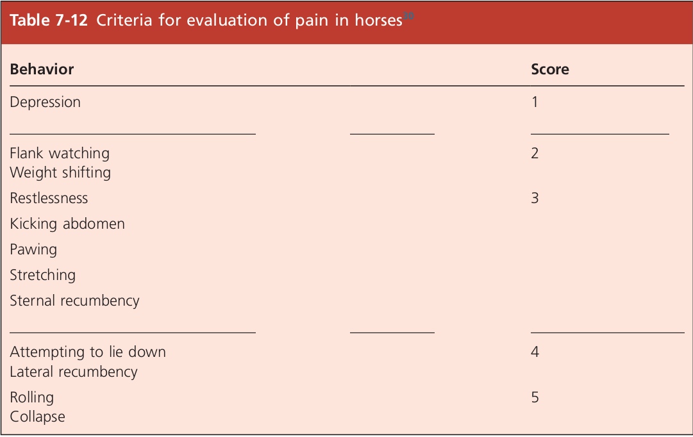Colic pain signs chart
نکته: اسبی که بیش از ۲۴ ساعت دفع مدفوع نداشته باشد، هر چه سریع تر باید مورد معاینه قرار بگیرد.
سایر علائم نشان دهنده ی امکان کولیک
بی اشتهایی
تعریق
اسهال
رفتار های غیر عادی
بر حسب عامل و میزان درد، شدت بروز علائم بالینی هم متفاوت است. مثلا در درد خفیف، ممکن است حیوان فقط دست به زمین بکوبد و کم خوراکی کند. اما در درد های شدید ممکن است اجازه نزدیک شدن کسی را هم ندهد.
تقسیم بندی کولیک ها
بر اساس زمان شروع علائم
Acute حاد: کمتر از 24-36 ساعت از شروعشان می گذرد.
Chronic مزمن: بیش از 36 ساعت از شروعشان می گذرد.
Recurrent راجعه: اپیزود های مختلفی را در 2-3 روزنشان می دهد، بهتر می شود و دوباره علائم بر می گردند.
بر اساس نوع عارضه
Obstructive & non-Strangulating: انسدادی غیر اختناقی
این نوع عوارض باعث انسداد مجرای گوارشی (G.I tract) شده و از حرکت Aboral (دور شونده از دهان) مواد جلوگیری می کند ولی باعث اختلال در خونرسانی به مجرای گوارشی نمی شوند. مثل انباشتگی کولون Impaction of large colon
البته در مراحل بعدی بیماری، این انسداد ها باعث اتساع شده و همین اتساع ها باعث کاهش خونرسانی به مجرای گوارشی شده لذا باعث ایجاد اختناق می شود.
به عوامل ایجادکننده این انسداد های غیر اختناقی، Simple obstruction می گویند. شامل:
Small-intestinal obstructive:
ileal hypertrophy
ileocecal intussusception: توهم رفتگی تلسکوپی روده به داخل سکوم
foreign-body obstruction of the lumen
آبسه های ناحیه شکمی:
بیشتر در اسب های کمتر از 5 ساله که آزمایش خون بسیار کمک کننده است: مشاهده ی نوتروفیلی، left shift، پروتئین بالا و سلول های چند هسته ای زیاد. در پاراسنتز شکمی، مشاهده زردی و کدری مایع صفاقی. معمولا در اثر باکتری های Strep.equi و Strep.zooepidemicus متعاقب بیماری های عفونی مثل strangle. در این موارد علاوه بر درمان دل درد، بایستی آنتی بیوتیک تراپی طولانی مدت (چند هفته تا چند ماه) هم بایستی صورت گیرد.
لیپوم پایه دار: در اسب های بیش از 10 ساله شایعتر است.
انباشتگی غذا در ایلئوم: عامل مستعد کننده، خوردن کاه و کلش زیاد است.
انباشتگی آسکاریس:
عواملی مثل پاراآسکاریس اکوئوروم. در بیشتر موارد، در مواقعی دیده می شوند که با دوز بالا داروی ضد انگل بدهیم و مقدار زیادی انگل به یکباره بمیرند و لاشه های این انگل ها باعث انسداد بشود. لذا توصیه می شود اگر مشکوک به درگیری شدید انگلی هستیم، حتما از دارو های ملین (مثل پارافین) قبل از درمان استفاده کرده و داروهای ضد انگل را با دوز کمتر و به طور مکرر استفاده کنیم.
چسبندگی محوطه شکمی
نئوپلازی
Large-intestine obstructive:
Impaction: انباشتگی
Simple and non-strangulating displacement of large colon
Obstructive & Strangulating: انسدادی اختناقی
این نوع عوارض باعث انسداد های اختناقی می شود: یعنی علاوه بر اختلال در حرکت Aboral ترشحات و مواد غذایی، خونرسانی به مجرای گوارشی هم مختل می شود. مثل پیچ خوردگی(بیش از 180 درجه) روده باریک Small intestine volvulus یا توهم رفتگی تلسکوپی روده ها intussusception
نکته ای که در این موضوع بایستی لحاظ شود، این است که در اختناق ها، عامل اختلال در خونرسانی به مجرای گوارشی، مکانیکی است: یعنی فشردگی عروق(شریان یا ورید)، در اثر یک فشار مکانیکی است نه عواملی مثل آمبولی و …
عوامل این عارضه به صورت همزمان، ایجاد کننده انسداد و اختناق هستند که منجر به درد شدید و مستمر می شوند که با دارو های ضد درد هم به سختی کاهش می یابد.
انسداد باعث اتساع و اختناق، باعث ایسکمی و از دست رفتن عملکرد مجرا و توکسمی می شود.
دوره ی بیماری کمتر از 24 ساعت است (گاهی 6 ساعت) و علائم بالینی خاص این موارد شامل توکسمی، التهاب سیستمیک و Cardiovascular collapse می باشد.
هر بافتی دچار ایسکمی یا پیچ خوردگی بشود، بعد از اصلاح عامل، رادیکال های آزاد در حین Reperfusion بافتی، باعث تخریب و آسیب گسترده به بافت می شود. لذا در این کیس ها، حتما بایستی آندوتوکسین ها مهار شوند که تجویز Vit-C و کورتون ها، برای مهار این رادیکال های آزاد کمک کننده است.
non-Strangulating Infarctive:
این نوع عوارض در اثر انفارکتوس ها می باشد که باعث کاهش خونرسانی غیر اختناقی می شود: یعنی عامل کاهش خونرسانی یک فشار مکانیکی نیست! مثل thromboembolic colic
شاخصه اصلی عوامل infarctive، ایسکمی دیواره روده هاست که باعث کاهش motility و عملکردهای جذبی و از هم پاشیدگی دیواره روده هاست.
یکی از عوامل ایجاد انفارکتوس های غیر اختناقی، مهاجرت لارو استرونژیل ها است:
ورود انگل به عروق مزانتر در Cranial mesenteric artery یا Ileocecal atery، باعث تشکیل ترومبوس می شود که از این ترومبوس، آمبولی هایی جدا می شود و وارد سیستم خونرسان روده باریک شده و باعث ایسکمی و آزاد شدن رادیکال های آزاد می شود. گاهی اوقات در آزمایش رکتال، اگر بتوانیم عروق خونی مثل Mesenteric artery را در سقف خفره شکمی لمس کنیم، حالت fremitus دارند (مانند لرزش شلنگ آب زیر دست) ک معمولا تشخیصش سخت است. ولی اگر این حالت را لمس کردیم، می توان به انفارکتوس های ناشی از Verminous arteritis مشکوک شد.
شوک ها (مثل Hypovolemic, Endotoxemic ,Cardiogenic و ...) هم می توانند باعث کاهش perfusion بافتی و آزاد شدن رادیکال های آزاد شوند.
Inflammatory: التهابی
این عوامل باعث کاهش تحرکات و جذب می شوند که باعث انباشتگی مایعات و ingesta شده که در پی آن، اتساع و دردهای شکمی هم بوجود می آید.
عوارض التهابی کولیک مثل: Peritonitis, Enteritis, Colitis,…
معاینه اسب کولیکی
اخذ تاریخچه
اولین قدم در برخورد با اسب دچار کولیک، history taking است:
میزان شدت درد
زمان آخرین مدفوع و کیفیت آن مدفوع
سن، جنسیت، نژاد: برخی عوامل مسبب کولیک در سنین، جنسیت یا نژاد خاص بیشتر است.
آیا رفتار خاصی داشته؟
بیماری قبلی داشته؟
برگشت مواد غذایی از بینی دارد؟
تمرین شدید داشته؟
کولیک عود می کند؟
جفت گیری، زایمان داشته یا آیا حامله است؟
تغییرات جیره:
مثلا خوردن کاه و کلش زیاد در کره اسب های تازه از شیر گرفته شده، احتمال بروز کولیک را بیشتر می کند. یا آیا قرص یا خمیر ضد انگل خورده؟
بررسی علائم درد
درد ملایم: پا به زمین کوبیدن، به پهلو نگاه کردن، کشیدن بدن، خوابیدن
درد متوسط: لگد زدن به شکم، قوز کردن و پشت کمانی شکل، دراز کشیدن
درد شدید: تعریق، به زمین افتادن، غلت زدن، ناله کردن، بی قراری و حرکت مداوم
کشیدن بدن Stretching
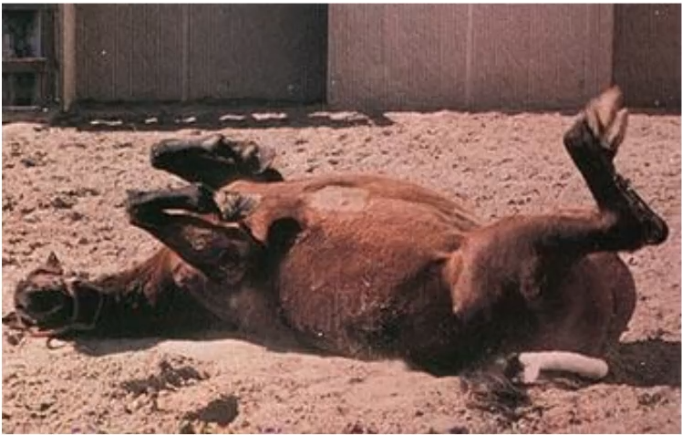غلت زدن Rolling
نکته: مشاهده خراش های پوستی دور چشم یا روی برجستگی لگن، نشان دهنده ی غلت زدن و رفتار خشن بوده که به خود آسیب زده و بیانگر درد شدید است.
در انسداد های اختناقی که حداکثر در 4-5 ساعت گذشته شروع شده باشد، درد شدیدی بروز می کند ولی در مواردی که دوره بیماری طولانی تر باشد و قسمتی از روده دچار نکروز پیشرفته شده باشد، ممکن است علائم درد چندان آشکار نباشد و هنگام معاینه می توان افسردگی را مشاهده کرد: مثلا پایین نگه داشتن سر و بی توجهی به اطراف.
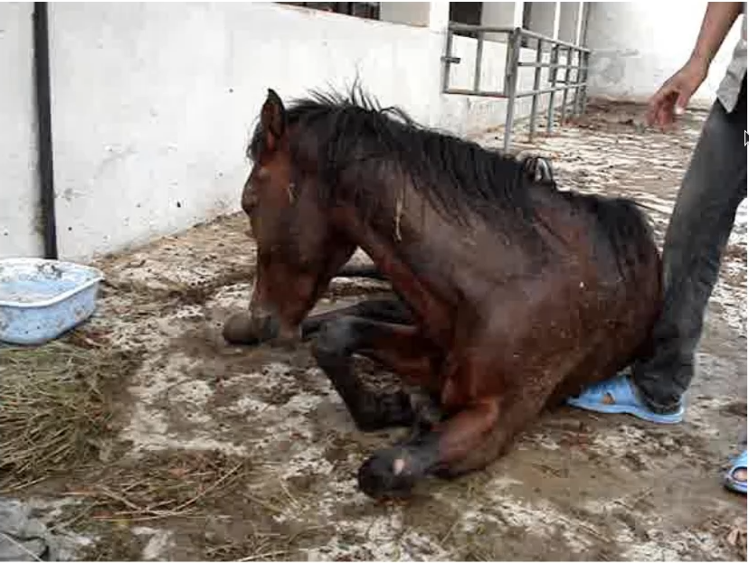افسردگی Depression
معاینات فیزیکی
نبض:
بالای 80: وضعیت بد
بالای 100: وضعیت وخیم
علائم درد و حرکات ناشی از آن، تأثیر جزئی در افزایش ضربان دارد ولی تغلیظ خون و کاهش خون برگشتی به قلب (مثلا در توکسمی)، در افزایش ضربان تأثیر شدیدتری دارد و باعث Tachycardia می شود.
رابطه ی بین تعداد نبض با ماهیت کولیک و مدت آن، بسیار تنگاتنگ است. مثلا در انباشتگی خم لگنی (Pelvic flexure impaction)، حتی اگر مدت زیادی (حتی 48 ساعت) از شروع بیماری گذشته باشد، افزایش ضربان بسیار جزئی می بینیم. ولی در انباشتگی های ایلئال، به دلیل توقیف مایعات در روده ی باریک و معده و در نتیجه hypovolemia، ضربان به صورت پیشرونده بالا می رود. در بیماری هایی که طی آن انفارکتوس روده رخ می دهد، ضربان به شدت بالا می رود.
تنفس:
اسبی که درد متوسط یا شدید دارد، تنفسش سطحی شده (برای کاهش حرکات دیافراگم و قفسه سینه) و تعداد تنفس تا 30 بار در دقیقه بالا می رود.
CRT(Capillary Refill Time):
در حالت عادی بین 2-1 ثانیه
بیشتر از 3-2 ثانیه: بیانگر شوک یا دهیدراسیون
صداهای گوارشی در flank:
زیاد شدن حرکات: spasmatic colic
قطع شدن حرکات(atony): ileus و ...
آزمایش رکتال Rectal Palpation
مهم ترین بخش معاینه درمانگاهی اسب کولیکی است و همیشه بایستی انجام شود مگر اینکه اسب بسیار کوچک باشد یا حالت تهاجمی شدید داشته باشد.
آیا ارگان های در جای خود قرار دارند؟
آیا در روده اتساع دیده می شود و اگر اتساعی هست، کجاست و دلیلش چیست؟
چک کردن وضعیت مدفوع
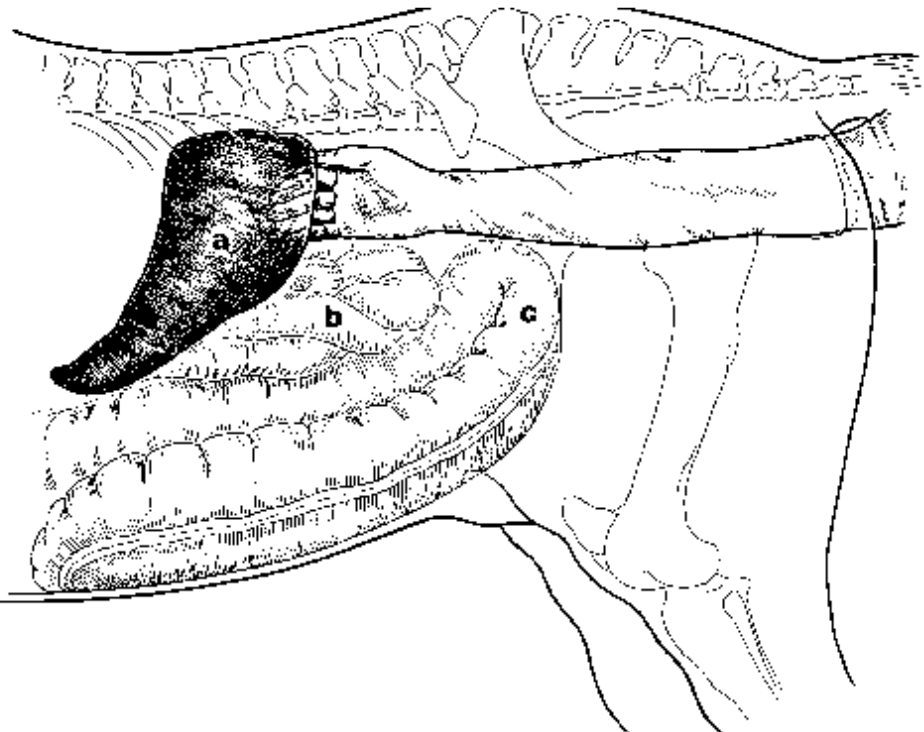Palpating the spleen
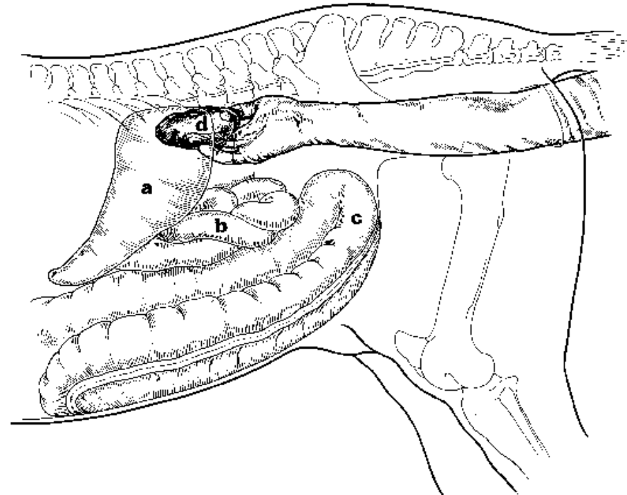Palpating the left kidney
در left dorsal quadrant، می توان طحال، قطب خلفی کلیه چپ و رابط کلیه به طحال (Nephrosplenic ligament) را لمس کرد که کشیدگی این لیگامنت، نشان دهنده ی تحت فشار بودن احشا در آن ناحیه است.
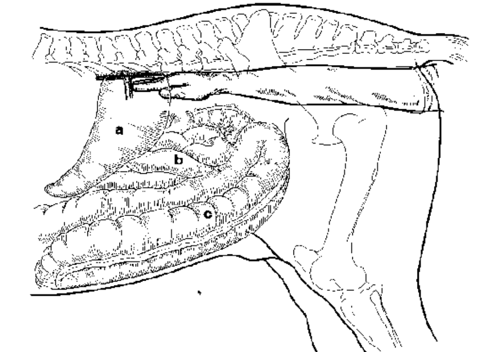Palpating the mesenteric root
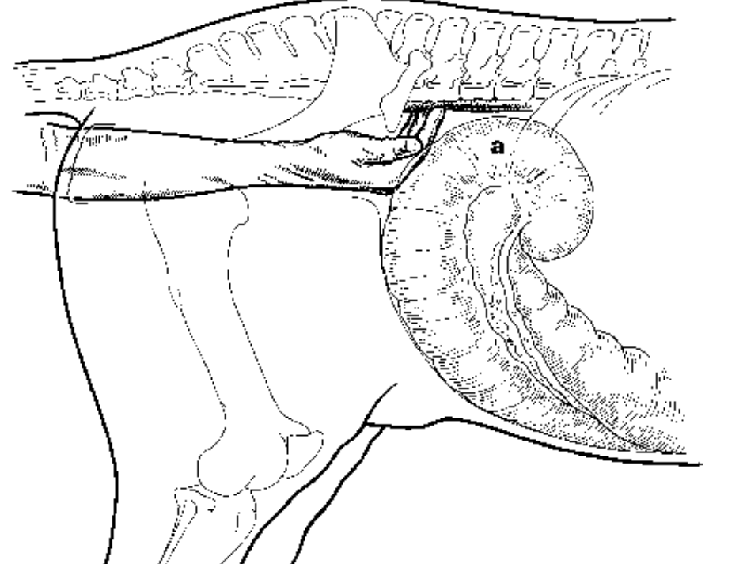Palpating the aorta
در زیر ستون فقرات می توان ریشه ی مزانتر (لمس آن در اسب های بزرگتر، مشکل است) و آئورت شکمی را لمس کرد.
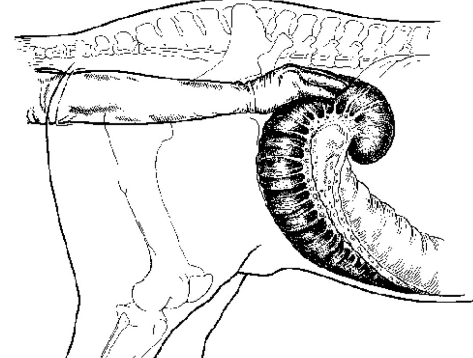Palpating the cecum
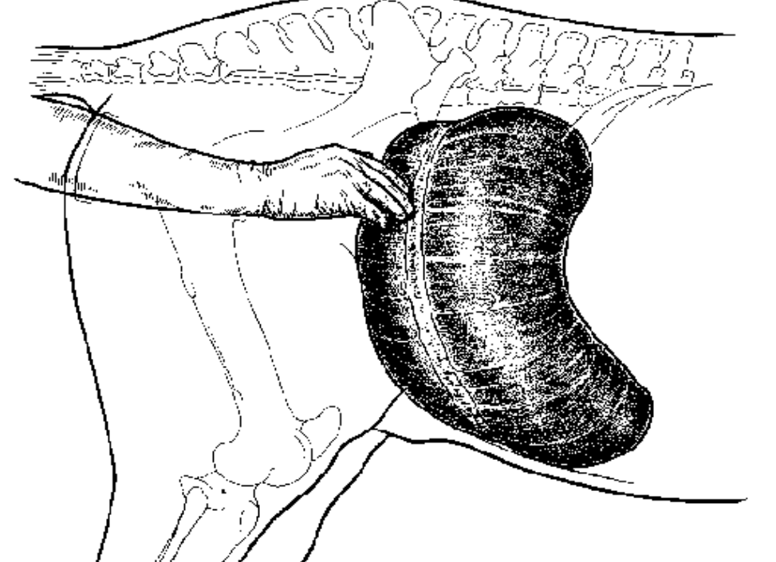Cecal tympany
Right dorsal quadrant: لمس پایه سکوم که در حالت طبیعی خیلی پر نیست. نوار های عضلانی خلفی و میانی از ناحیه پشتی به ناحیه شکمی امتداد دارند و شل هستند و با انگشت می توان آن ها را گرفت و سکوم را کشید.
انباشتگی سکوم: وقتی دست داخل می رود، کل سمت راست حفره شکمی، سکوم است. به طوری که حتی از بیرون به دام نگاه کنیم، اتساع سمت راست شکم را می توان مشاهده کرد.
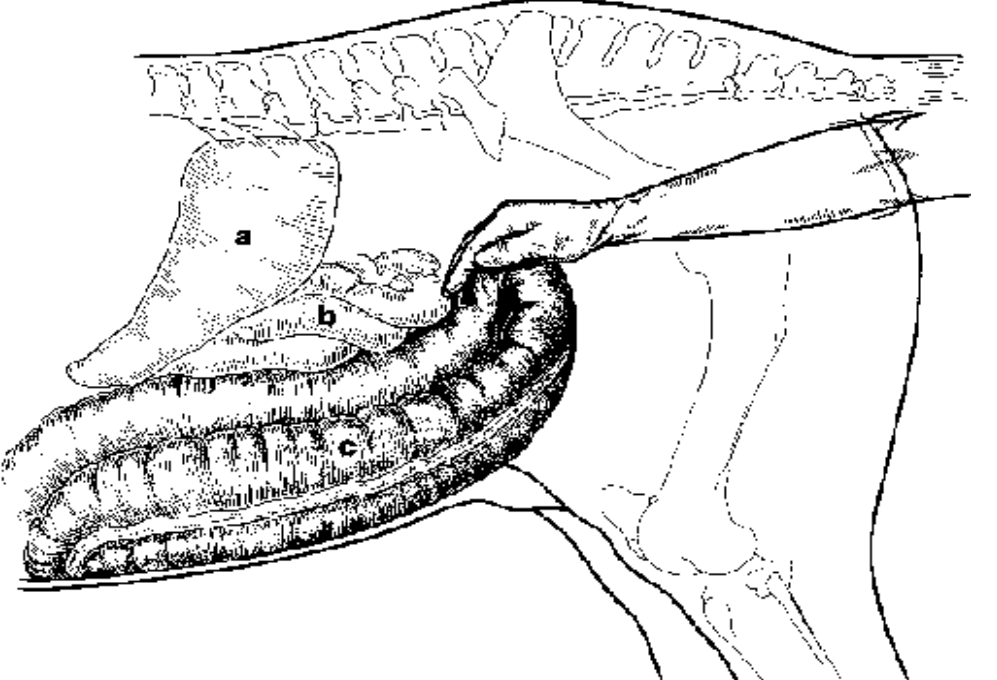Palpating the Pelvic flexure
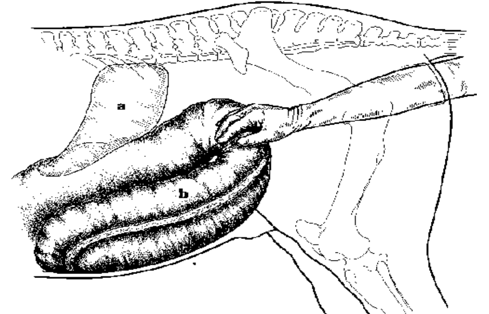Large colon impaction
خم لگنی کولون که در حالت عادی، درون آن مواد غذایی نرم وجود دارد.
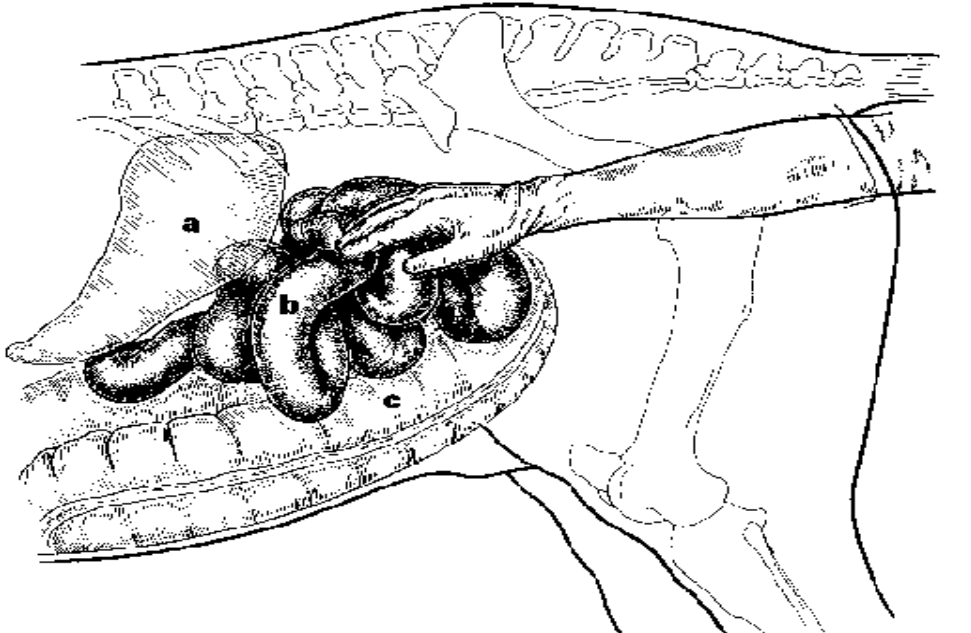Small-intestinal strangulation
در حالت عادی نمی توان روده باریک را لمس کرد (مگر اینکه در هنگام لمس، منقبض شود). در اتساع روده ی باریک، هنگام داخل کردن دست عکس العمل شدید درد مشاهده می شود و روده های باریک، به صورت سوسیسی شکل، توهم رفته ومتسع قابل لمس است.
رنگ مخاطات:
کم آبی(dehydration): رنگ مخاطات سفید یا کم رنگ
پر خونی سیاهرگی یا توکسمی: رنگ مخاطات، قرمز تا قرمز آجری که در آخر هم کبود یا cyanotic می شود که بیانگر وخامت وضع دام است.
پاراسنتز شکمی Paracentesis:
بررسی میزان پروتئین
بررسی وجود خونریزی
بررسی چشمی: در حالت عادی، مایع شفاف و به رنگ کاه و بدون سلول( یا خیلی کم)
NasoGastric tube:
در صورت انباشتگی در معده، باعث تخلیه مواد می شود. Gastric reflux بالای 2 لیتر: درگیری جدی معده و روده
درمان
کاهش درد
اولین راه رهایی از درد، تخلیه روده و معده متسع بوسیله ی لوله زدن (NasoGastric tube) است که محتویات برگشتی از معده و روده را (به خاطر انسداد یا ileus) تخلیه کنیم.
گاهی اوقات در اسب هایی که جراحی شده اند یا آماس روده قدامی(DPJ)* دارند، لوله را به مدت طولانی در معده قرار می دهیم تا محتویات معده مرتباً تخلیه شود.
آماس روده قدامی- التهاب دئودنوم و ژژنوم قدامی که باعث ileus و ترشح بیش از اندازه مایعات به داخل لومن روده در مقاطع درگیر، می شود و همین امر، باعث حجم زیاد Gastric reflux، دهیدراسیون، فشار خون پایین و احتمالا شوک می شود.
درمان های دارویی برای کاهش درد:
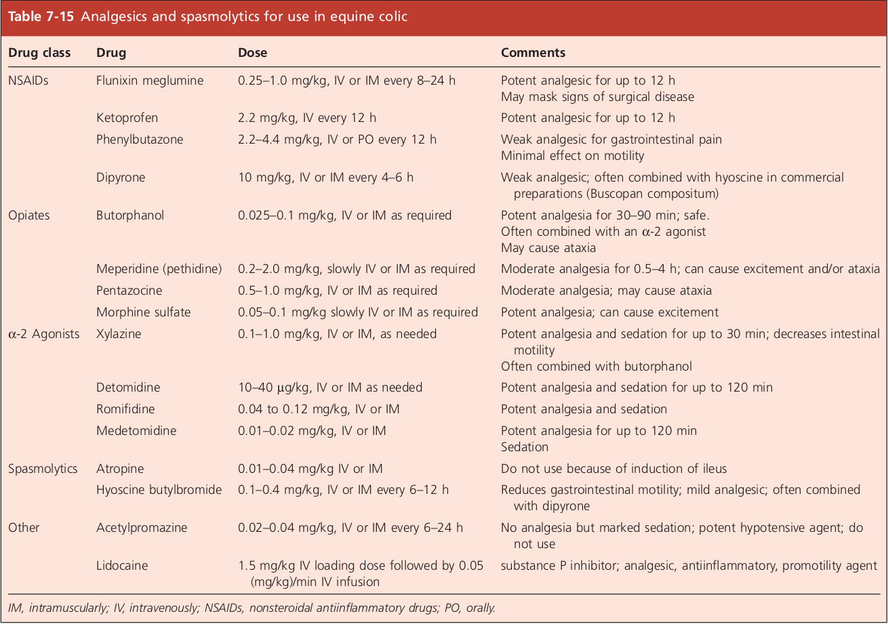
اصلاح وضعیت آب بدن، الکترولیت ها، تعادل اسید و باز و حفظ محیط داخل بدن (هموستاز)
مهم ترین بخش در درمان بیمار مبتلا به بحران حاد شکم (کولیک)، مایع درمانی است که بیشتر موفقیت و ناکامی در درمان اسب دچار شوک، در گرو مایه درمانی است. هدف اصلی هم جایگزینی آب است ولی برای باقی ماندن آب در فضای بین سلولی، لازم است که Na در محلول باشد؛ به طوری که در مایع درمانی طولانی مدت، میزان K طبیعی سرم دچار تغییر خاصی نشود.
معمولا با محلول های الکترولیتی متوازن مثل رینگر، رینگر لاکتات و رینگر استات
x می تواند TP(Total Protein) یا PCV باشد که در حیوان دچار کم آبی، به صورت مصنوعی بالا می رود.
میزان آبی که بایستی جایگزین شود = حجم خون ✕ نسبت کم آبی
حجم خون معمولا 7% وزن بدن است؛ مثلا اسب 700kg، دارای 4lit خون می باشد.
نکته: این محاسبات در اسبی که به جراحی ارجاع داده می شود، بسیار حیاتی است چون مایع درمانی باعث می شود که بیمار با شرایط پایدارتری تحت بیهوشی قرار بگیرد.
توصیه می شود که حداقل نیمی از میزان آب جایگزینی با استفاده از رینگر لاکتات یا رینگر استات باشد و باقی، از محلول های نمکی یا قندی-نمکی استفاده شود.
PCV اسب بیمار 52 است. PCV اسب در حال نرمال را 35 در نظر می گیریم. اگر وزن بیمار 700kg باشد، میزان سرمی که برای بایستی به صورت فوری برای آب از دست رفته تجویز کنیم را محاسبه کنید:
از این مقدار، 10-15lit بایستی رینگر یا رینگر لاکتات باشد و باقی، می تواند سرم نمکی باشد.
پیشگیری و درمان آندوتوکسمی:
Polymyxin:
5000 IU/kg وریدی هر 8-12 ساعت
رژیم آنتی بیوتیکی شامل:
Aminoglycoside: مثل آمیکاسین یا جنتامایسین
پنی سیلین
مترونیدازول
تسهیل عبور مواد غذایی و مدفوع
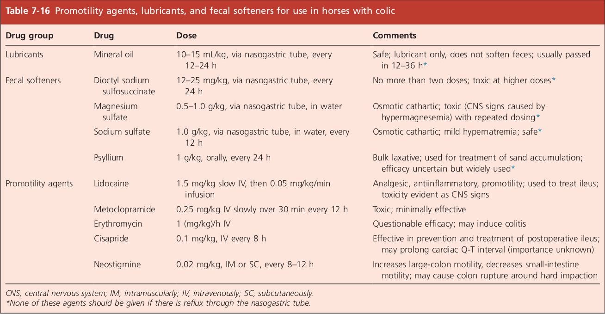
درمان عامل اصلی ایجادکننده کولیک
ارجاع به جراح
در برخورد با اسب کولیکی، ما حدالامکان سعی در تشخیص علت اصلی کولیک داریم که بتوان آن را برطرف کرد. اما با سایر اقدامات مثل مایع درمانی، لوله زدن، خوراندن پارافین، داروهای ضد درد، خوراندن مسهل و در صورت نیاز، تروکار زدن، می توان دل درد را برطرف کرد. اما در بعضی موارد بایستی بیمار به جراحی ارجاع شود.
موارد ارجاع به جراحی
درد مداوم و شدید که به داروهای ضد درد پاسخ نمی دهد (حداقل 20 دقیقه). اگر شواهدی هم از درگیری دستگاه قلبی-عروقی هم بود که ASAP باید به جراحی ارجاع داد.
جابجایی اندام ها همراه با انباشتگی
حملات راجعه کولیک طی چند هفته یا چند ماه
وجود رگه های خون، پروتئین زیاد یا WBC زیاد در مایع صفاقی
آسیب یا زخم قابل لمس در توشه رکتال به همراه اتساع روده ها
انباشتگی کولون ها که تا 24 ساعت رفع نشود
رفلاکس بیش از 4 لیتر از NasoGastric tube
بدتر شدن علائم حیاتی با گذشت زمان
پیشگیری از کولیک
درمان های ضد انگلی:
در اسب های اصطبلی حداقل 2 بار در سال. شروع درمان های ضد انگلی از 4-3 ماهگی
سوهان زدن به دندان ها:
هر 6 ماه یکبار. لبه ی خارجی دندان های بالا و لبه های داخلی دندان های پایین
اجتناب از تغییر جیره
جیره ی مناسب:
علوفه و کنسانتره مرغوب
اجتناب از مواد نفاخ
عاری از آغشتگی به خاک، کود و مواد غیرقابل هضم
دیگر عوامل ایجادکننده کولیک در اسب
Cecal Tympany: تجمع گاز در سکوم
به ندرت رخ می دهد و معمولا ثانویه است. باعث دل درد شدید و صدای زنگی در flank سمت راست و برآمدگی سمت راست شکم می شود. هنگام توش رکتال، در سمت راست حفره شکمی، می توان اتساع و گاز را در base سکوم لمس کرد.
درمان:
برای درمان، از right flank تروکار زده و سپس با توشه رکتال، سکوم را فشار داده تا گاز راحت تر خارج شود. اگر نفخ دوباره حادث شد، بیانگر این است که روده ها مشکل پیچیده تری دارند و بایستی عامل اصلی رفع شود که گاهی نیاز به جراحی دارد.
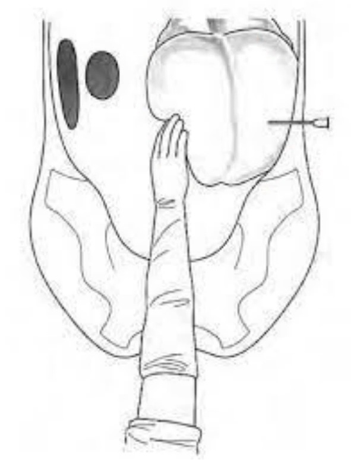Cecum Trocarization
Cecal Impaction: انباشتگی سکوم
در توشه رکتال، اتساع سکوم قابل لمس است ولی دلیل اتساع، تجمع گاز نیست و انباشتگی مواد غذایی هضم نشده است.
درمان:
تجویز آرامبخش
سرم تراپی
مسهل خوراکی:
Epsom salt(منیزیوم سولفات): 0.5kg نمک در 4-8 لیتر آب
پارافین: حدود 2 لیتر
پس از این، دام را حرکت می دهیم تا ببینیم آیا مواد غذایی حرکت می کنند یا نه که اگر جواب نداد، بایستی جراحی شود.
Sand Colic: کولیک شنی
تجمع شن، ماسه و سنگریزه به همراه ingesta در کولون ها. خیلی از کره اسب ها بدلیل عادت یا کمبود مواد غذایی، علاقه به خوردن شن و ماسه دارند یا این که خوراک، آغشته به شن و ماسه باشد. در توشه رکتال، سنگریزه ها قابل لمس اند و یا وقتی که مدفوع راخارج می کنیم، می بینیم که آغشته به شن است و هنگام شستن دستکش، ته نشین شدن سنگریزه هارا در داخل دستکش مشاهده می کنیم.
درمان
داروی انتخابی در درمان کولیک شنی، Psyllium می باشد